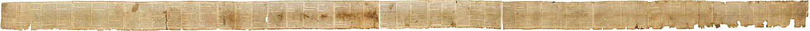

Dead Sea Scrolls

Over 900 ancient manuscripts and fragments found in eleven caves near Qumran, including copies of nearly every Old Testament book. The collection includes the complete Great Isaiah Scroll, community rules, prayers, and commentaries.
Biblical Significance
These are the oldest known biblical manuscripts, copied a thousand years before the previous oldest copies, yet remarkably faithful in transmission. They anchor our hope that the Scriptures we read today reliably preserve the words God gave, and the Isaiah Scroll in particular confirms the messianic prophecies Christians cherish.
Interpretations
Scholars agree the scrolls are the oldest biblical manuscripts by a millennium and confirm the general reliability of the later Masoretic text, while debating details — which Jewish group produced them (usually identified with the Essenes) and how to read the community’s own rules.